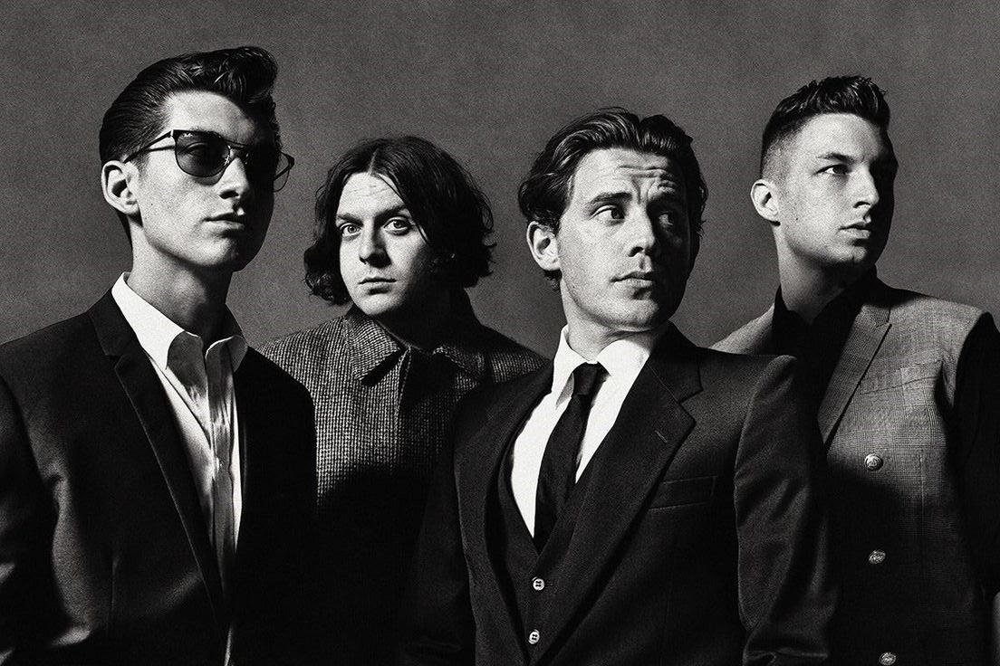

Arctic Monkeys are an English rock band formed in Sheffield in 2002. They comprise lead singer and guitarist Alex Turner, drummer Matt Helders, guitarist Jamie Cook and bassist Nick O'Malley, who replaced co-founder and original bassist Andy Nicholson in 2006. Though initially associated with the short-lived landfill indie movement,[2] Arctic Monkeys were one of the earliest bands to come to public attention via the Internet, during the emerging "blog rock"[3] era. Commentators have suggested that this period marked a shift in how new bands were promoted and marketed.Their debut album, Whatever People Say I Am, That's What I'm Not (2006), received acclaim and topped the UK Albums Chart, becoming the fastest-selling debut album in British chart history at the time. It won Best British Album at the 2007 Brit Awards and has been hailed as one of the greatest debut albums.[5] Its follow-up, Favourite Worst Nightmare (2007), was also acclaimed and won Best British Album at the 2008 Brit Awards. Humbug (2009) and Suck It and See (2011) received positive but weaker reviews.

By subscribing to the mailing list you agree to the terms of use of the Arctic Monkeys' Newsletter. This site is protected by reCAPTCHA and the Google privacy policy and terms of service apply.